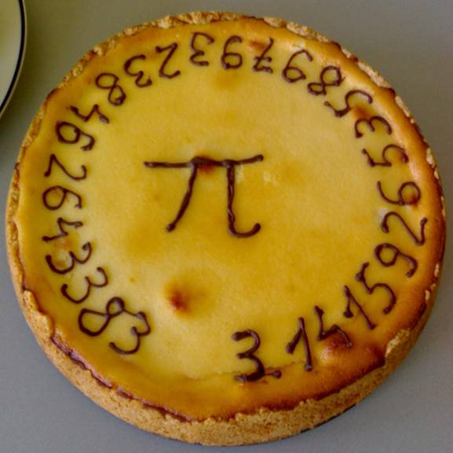

El número Pi
Es una constante matemática que representa la proporción entre la longitud de la circunferencia
de un círculo y su diámetro. Es un número irracional, lo que significa que tiene un número infinito
de decimales que no se repiten en un patrón.

Su valor aproximado es:
3.1415926535897932

Características fundamentales:
- Es irracional: No puede expresarse como una fracción exacta de dos números.
- Es trascendente: No es la solución de ninguna ecuación algebraica con coeficientes enteros.
Historia
Origen:
El matemático griego Arquímedes de Siracusa fue el primero en calcular π de manera científica.
Usó un método ingenioso: inscribió y circunscribió un círculo con polígonos de hasta 96 lados. Al
calcular los perímetros de estos polígonos, pudo establecer que π estaba entre 223/71 (≈3.1408)
y 22/7 (≈3.1429). 22/7 sigue siendo una aproximación muy usada.

Su simbolo:
El símbolo griego π fue utilizado por primera vez para representar la constante por el matemático
galés William Jones en 1706. Fue popularizado años después por el gran matemático Leonhard Euler
en el siglo XVIII.
La carrera por los decimales:
- Ludolph van Ceulen (c. 1600): Calculó 35 decimales correctos. π fue llamado durante un tiempo
"número ludolfiano" en su honor.
- Época moderna: Con la llegada de los ordenadores, el cálculo de dígitos de π se disparó.
- 1949: ENIAC calculó 2.037 decimales en 70 horas.
- 2021: Universidad de Ciencias Aplicadas de los Grisones (Suiza) calculó 62.8 billones de decimales.

Curiosidades
El día de Pi:
Por la forma en que se escribe la fecha en la notación empleada en Estados Unidos, el 14 de marzo (3/14)
se ha convertido en una celebración no oficial para el “Día Pi”, que ha derivado de la aproximación de tres
dígitos de pi: 3,14. Habitualmente, la celebración se concentra a la 01:59 p. m. (en reconocimiento de la
aproximación de seis dígitos: 3,14159).

Récords de memorización:
El récord mundial Guinness lo tiene Rajveer Meena (India), quien recitó 70,000 decimales de π en 2020.
Tardó más de 10 horas.

Piems (Poemas de Pi):
Son poemas donde la longitud de cada palabra representa un dígito de π.
- Ejemplo: "How I need a drink, alcoholic of course, after the heavy lectures involving quantum
mechanics!" (3.14159265358979)
Su huella en la tecnologia
Procesamiento de señales:
Pi es un componente crucial en la transformada de Fourier, el algoritmo fundamental detrás del procesamiento
de señales digitales. Esta herramienta matemática descompone señales complejas (como la voz, el audio o las
imágenes) en sus frecuencias constitutivas

GPS:
Los cálculos para determinar la distancia entre el satélite y el receptor involucran ecuaciones donde es
necesario el uso de Pi con 14 decimalespara garantizar que la ubicación sea exacta; incluso un error minúsculo
en este valor se amplificaría, dando coordenadas incorrectas.

Relojes de Péndulo:
El periodo de oscilación (el tiempo que tarda el péndulo en ir y volver) depende directamente de π. Incluso
si deseamos determinar el valor de Pi fuera del ámbito de los círculos, podemos usar un péndulo y un cronómetro
para medir el periodo de oscilación, y así despejar pi.